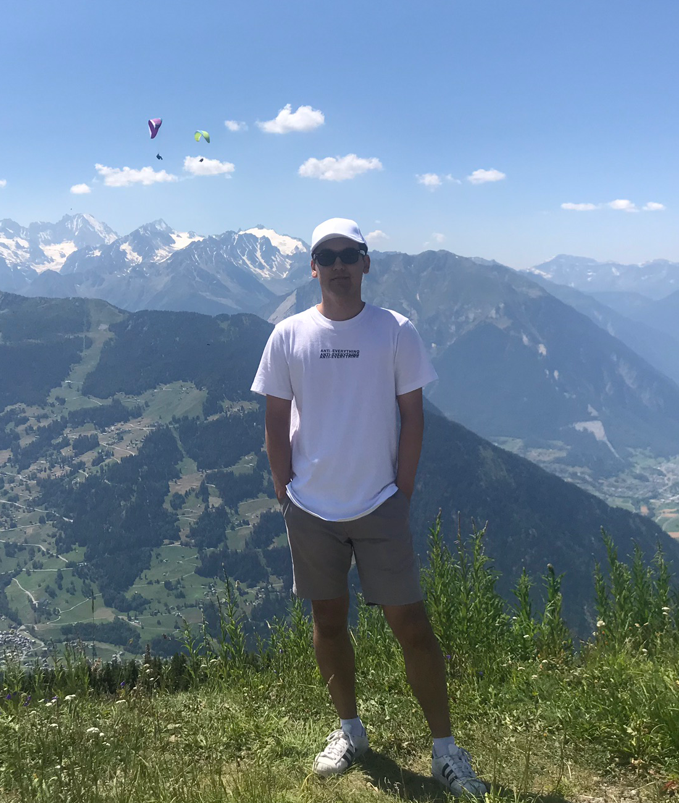

OVER MIJ

Ik ben een 22 jarige, in Amstelveen geboren, student die op dit moment in het tweede jaar van de studie Communication & Multimedia Design zit op de Hogeschool van Amsterdam.
Al sinds ik een kind was hield ik ervan om achter de computer te zitten en op het internet rond te browsen. Vandaag de dag is hier geen verandering in gekomen, elke dag ben wel op het internet. Desktop, laptop, mobiel, ik gebruik het allemaal dagelijks.
Toen ik eenmaal opzoek was naar een studie om te volgen, was ik gekomen op Communication & Multimedia Design. Hier ga je veel aan de slag met websites en apps, wat een groot onderdeel is van mijn leven. Ik heb altijd interesse gehad in hoe een website of app tot stand komt en wat er allemaal bij komt kijken, dus was het geen moeilijke keuze voor mij om voor deze studie te gaan.
Wil je meer weten over mij? Neem dan contact op!